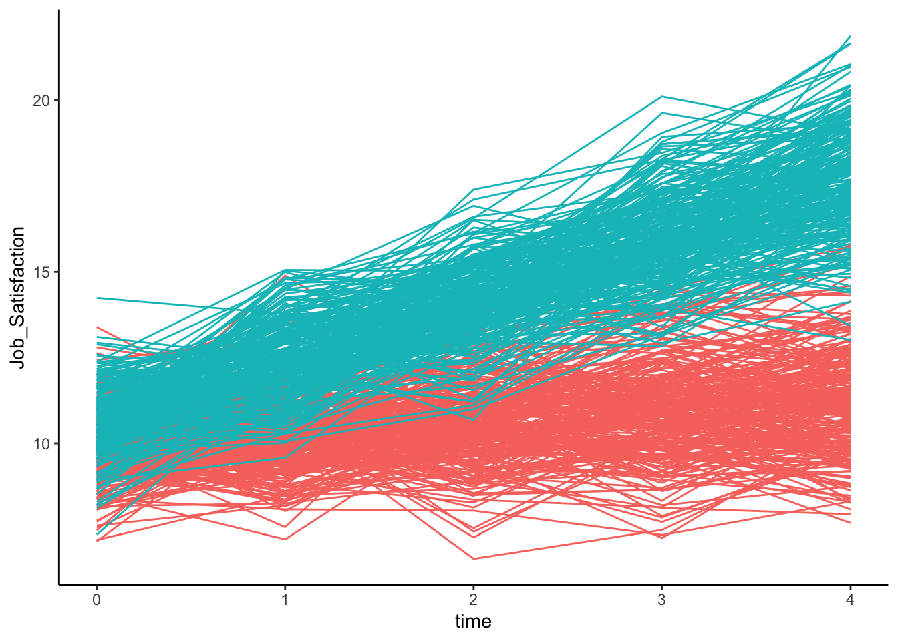

#Download and open package MASS.
library(MASS)
#Simple function to simulate longitudinal data with random intercept(s) and slope(s).
ml_data <- function(n_pers, n_time, beta_int, beta_slo_time, beta_slo_covar, beta_slo_interact, mean_i, var_i, mean_s, var_s, cov_is, mean_r, var_r) {
REff = mvrnorm(n_pers, mu=c(mean_i,mean_s), Sigma=rbind(c(var_i, cov_is), c(cov_is, var_s) ))
colnames(REff) = c("intercept","slope");
dat= data.frame(ID = rep(1:n_pers, each=n_time),
time = rep(1:n_time, times=n_pers),
covar= c(rep(0,n_pers/2, each=n_time),rep(1,n_pers/2, each=n_time)),
int = rep(REff[,1], each=n_time),
slo = rep(REff[,2], each=n_time), slo_cov=rep(beta_slo_covar, each=n_time), slo_interact=rep(beta_slo_interact, each=n_time),
Job_Satisfaction = NA)
dat$time <- dat$time-1
dat$interact <- dat$time*dat$covar
Job_Satisfaction = with(dat, (beta_int + int) + (beta_slo_covar)*covar
+ (beta_slo_time + slo)*time
+ (beta_slo_interact)*interact
+ rnorm(n=n_pers*n_time, mean=mean_r, sd=sqrt(var_r)))
dat$Job_Satisfaction <-Job_Satisfaction
return(dat) }
# simulate tutorial data
set.seed(2002)
d1 <- ml_data( n_pers=500,
n_time=5,
beta_int=0, beta_slo_time=0.3, beta_slo_covar=0.5, beta_slo_interact=1.5, mean_i=10,
var_i=0.13,
mean_s=0,
var_s=0.09,
cov_is=0,
mean_r=0,
var_r=1)
# trim the number of variables
data <- d1[,c(1,2,3,8)]Growth Mixture Models
%%% Wardenaar, K. (2020). Latent Class Growth Analysis and Growth Mixture Modeling using R: A tutorial for two R-packages and a comparison with Mplus. %%%
Overview
Growth mixture modeling (GMM) is a statistical technique used to identify heterogeneous subgroups or classes that follow distinct developmental paths (growth trajectories) within populations over time. These models are an extension of latent growth curve models, with a focus on delineating variability in growth trajectories. This is particularly relevant for longitudinal research where it’s suspected that different subpopulations might exhibit different growth, stability, or decline trajectories. The GMM framework estimates both the shape and number of latent trajectories and the probability of an individual belonging to each trajectory. These models capture overall growth patterns while simultaneously allowing for subgroup variations.
[+add diagrams/figures]
When to use Growth Mixture Models?
You should consider Growth Mixture Models in the following situations:
- You are interested in: Identifying subgroups or trajectories within a population that exhibit distinct growth patterns over time.
- Your data: Captures repeated measurements, tracking the development or change of a certain variable across multiple time points.
- Your objective: Is to uncover heterogeneity in growth trajectories and classify individuals into distinct trajectories based on observed data.
Getting Started with Growth Mixture Models
In this tutorial, we will guide you through an example of a growth mixture model using a small dataset. By the time you complete this tutorial, you will be equipped to:
- Understand the basic concepts behind Growth Mixture Models.
- Implement this modeling technique on your longitudinal data using the appropriate statistical tools.
- Analyze and interpret the distinct growth trajectory outcomes and the proportion of individuals in each trajectory.
Basic Example
In this tutorial, we will begin by generating a sample dataset directly within R to ensure everyone has the same starting point and can follow along without needing to download or access external files. This generated dataset will serve as our example throughout this tutorial. In your own analyses, you’ll likely start by importing your own data.
The simulated dataset created for this example consists of scores on a single outcome variable (“Job_Satisfaction”) for 500 individuals each measured at four time points: T1-T5.
Create Example Dataset
View Dataset
head(data) ID time covar Job_Satisfaction
1 1 0 0 10.05297
2 1 1 0 12.56214
3 1 2 0 10.13121
4 1 3 0 12.71862
5 1 4 0 12.25841
6 2 0 0 10.49615Model Specification and Estimation
To specify a Growth Mixture Model (GMM), we will leverage the lcmm syntax to identify distinct trajectory classes within the data, representing different patterns of growth or change. This enables us to capture the heterogeneity in developmental trajectories, considering both the shared and individual-specific growth patterns.
Install and Load Necessary Libraries
# Install the lcmm package if not already installed
if (!("lcmm" %in% installed.packages())) {
install.packages("lcmm")
}
library(lcmm)Model
# Fit the GMM for Life Satisfaction across 5 time points
set.seed(2002)
oneclass <- hlme(Job_Satisfaction ~ time, subject = "ID", random=~1 + time, ng = 1,
data = data)
twoclass <- gridsearch(rep = 100, maxiter = 10, minit = oneclass,
hlme(Job_Satisfaction ~ time, subject = "ID", random=~1 + time,
ng = 2, data = data, mixture = ~ time, nwg=T))
threeclass <- gridsearch(rep = 100, maxiter = 10, minit = oneclass,
hlme(Job_Satisfaction ~ time, subject = "ID", random=~1+time,
ng = 3, data = data, mixture = ~ time,
nwg=T))
# make table with results for the 4 models:
summarytable(oneclass, twoclass, threeclass) G loglik npm BIC %class1 %class2 %class3
oneclass 1 -4392.479 6 8822.246 100.0
twoclass 2 -4255.757 10 8573.659 51.2 48.8
threeclass 3 -4253.242 14 8593.489 12.0 39.2 48.8test <- summarytable(oneclass) G loglik npm BIC %class1
oneclass 1 -4392.479 6 8822.246 100Fit Model
# Obtain and print a summary of the model
fit <- summary(twoclass)Heterogenous linear mixed model
fitted by maximum likelihood method
hlme(fixed = Job_Satisfaction ~ time, mixture = ~time, random = ~1 +
time, subject = "ID", ng = 2, nwg = T, data = data)
Statistical Model:
Dataset: data
Number of subjects: 500
Number of observations: 2500
Number of latent classes: 2
Number of parameters: 10
Iteration process:
Convergence criteria satisfied
Number of iterations: 6
Convergence criteria: parameters= 4.1e-09
: likelihood= 2.6e-07
: second derivatives= 6.8e-14
Goodness-of-fit statistics:
maximum log-likelihood: -4255.76
AIC: 8531.51
BIC: 8573.66
Maximum Likelihood Estimates:
Fixed effects in the class-membership model:
(the class of reference is the last class)
coef Se Wald p-value
intercept class1 0.04954 0.09238 0.536 0.59179
Fixed effects in the longitudinal model:
coef Se Wald p-value
intercept class1 10.59136 0.05471 193.580 0.00000
intercept class2 9.96707 0.05615 177.520 0.00000
time class1 1.76293 0.02919 60.396 0.00000
time class2 0.29359 0.02869 10.233 0.00000
Variance-covariance matrix of the random-effects:
intercept time
intercept 0.15014
time -0.01944 0.08708
coef Se
Proportional coefficient class1 1.03829 0.11323
Residual standard error: 0.99246 0.01812# plot the data (Figure 1)
library(ggplot2)
data$covar <- as.factor(data$covar)
plot1 <-ggplot()+geom_line(aes(y=Job_Satisfaction, x=time, group=ID, colour=covar), data=data, show.legend = FALSE)
plot1 <- plot1 + theme(legend.position = "none") + theme_classic()
plot1
## Creating variable (names) from output to be used for inline text
library(broom)
tidyfit <- tidy(fit)Warning: 'tidy.numeric' is deprecated.
See help("Deprecated")#augmentfit <- augment(fit)
#glancefit <- glance(fit)
intercept_class1_value <- tidyfit$x["intercept class1", "coef"]
#intercept_class1_value <- tidyfit[tidyfit$term == "intercept class1", "coef"]
#intercept_class1_value <- tidyfit[tidyfit$term == "intercept class1", "coef"]
# Extract column data
#p_values <- tidyfit$p.value
#estimate <- tidyfit$estimate
# Extract p-values for specific terms into tibbles
#intercept_variance_pvalue <- round(tidyfit[tidyfit$term == "i ~~ i", "p.value"], 3)
#slope_variance_pvalue <- round(tidyfit[tidyfit$term == "s ~~ s", "p.value"], 3)
#intercept_estimate <- round(tidyfit[tidyfit$term == "i ~~ i", "estimate"], 3)
#slope_estimate <- round(tidyfit[tidyfit$term == "s ~~ s", "estimate"], 3)
#intercept_slope_covariance <- round(tidyfit[tidyfit$term == "i ~~ s", "estimate"], 3)
#rmsea <- glancefit$rmsea
#bic <- glancefit$BIC
# Extract values from the tibble for inline text
#var_i_pval <- intercept_variance_pvalue$p.value
#var_s_pval <- slope_variance_pvalue$p.value
#int_est <- intercept_estimate$estimate
#slp_est <- slope_estimate$estimate
#is_cov <- intercept_slope_covariance
#model_list <- split(tidyfit, tidyfit$term)Interpreting the Results
A Growth Mixture Model (GMM) was applied to identify distinct trajectories (or growth patterns) in the dataset. GMM allows for the identification of latent subgroups within a population that follow different developmental or growth trajectories over time.
Using the hlme function, we estimated a GMM with 3 distinct growth trajectories (subgroups) using the predictor time.
From the summary output: - The estimated means and variances for each trajectory group can be extracted.
estimated means for each trajectory: G1:10.59136 G2: G3:
estimated variances for each trajectory: G1: 10.59136 G2: G3:
- The proportions of individuals in each trajectory group are: r gmm$proportions
- The estimated growth parameters (intercept and slope) for each trajectory group are: r gmm$parameters
Conclusion
The Growth Mixture Model has identified multiple distinct trajectories within the data. By examining the estimated proportions and growth parameters, we can gain insights into the different developmental or growth patterns present in the population. Further, statistical tests can be conducted to determine the significance and implications of these trajectories.